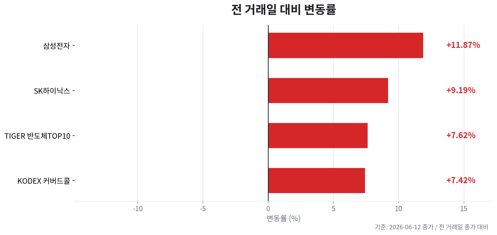
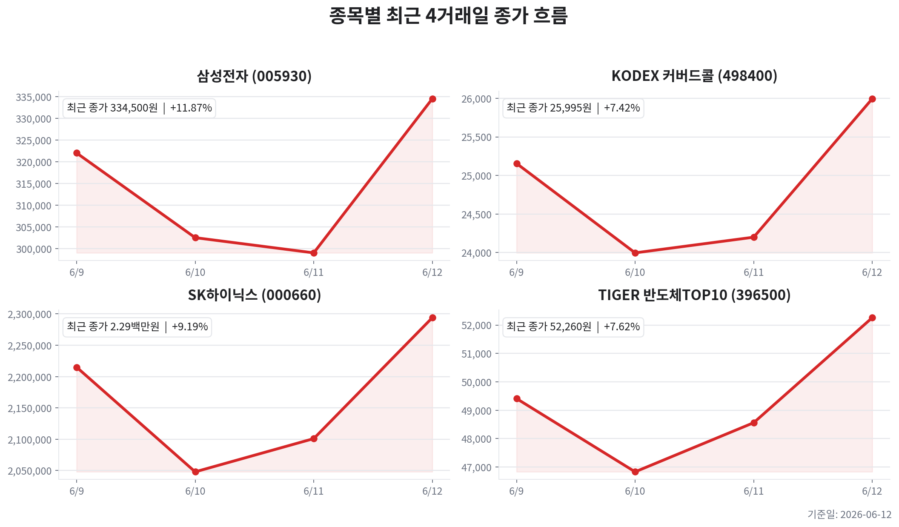
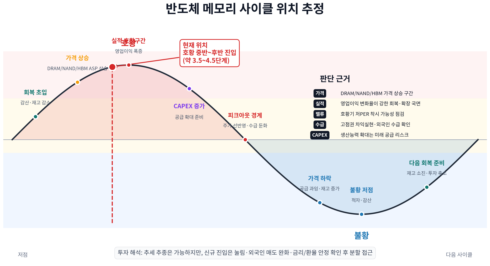

TIGER 반도체TOP10
오늘자 뉴스 0건
| 종목 | 티커 | 기준 가격 | 전 거래일 종가 | 등락 | 변동률 |
|---|---|---|---|---|---|
| TIGER 반도체TOP10 | 396500 | 52,260원 | 48,560원 | +3,700원 | +7.62% |
| KODEX 200타겟위클리커버드콜 | 498400 | 25,995원 | 24,200원 | +1,795원 | +7.42% |
| 삼성전자 | 005930 | 334,500원 | 299,000원 | +35,500원 | +11.87% |
| SK하이닉스 | 000660 | 2,294,000원 | 2,101,000원 | +193,000원 | +9.19% |



오늘 국내 반도체 포트폴리오는 AI/HBM 모멘텀이 다시 가격에 강하게 반영된 급반등 장세입니다.
KRX/pykrx 기준 삼성전자는 333,000원으로 전일 대비 +11.37%, SK하이닉스는 2,291,000원으로 +9.04% 상승했습니다. 전일 변동성 이후 두 종목이 동시에 강하게 되돌린 점은 단순 방어주 반등이 아니라 AI 서버·HBM 공급망 기대가 재점화된 신호로 해석합니다.
다만 현재 사이클은 회복 초입이 아니라 공급 부족→가격 상승→실적 폭증→주가 상승 이후 CAPEX 확대를 감시하는 호황 중후반입니다. 호황기 forward PER 5배대는 싸 보이는 착시가 될 수 있으므로 이익 추정 상향이 계속되는지, 외국인·기관 매수가 따라오는지 확인해야 합니다.
| 점검 항목 | 오늘 관찰값 | 사이클 해석 | 투자 판단 |
|---|---|---|---|
| DRAM/HBM | Counterpoint의 전세계 D램·HBM 시장 점유율 업데이트, AI 메모리 수요 및 HBM 공급망 뉴스가 지속 | AI 서버 중심 고부가 DRAM 수요가 가격과 믹스를 동시에 지지 | SK하이닉스의 HBM 순도 프리미엄은 유지, 삼성전자는 HBM4·패키징 모멘텀 확인 필요 |
| NAND/범용 메모리 | 범용 메모리는 HBM만큼 강한 뉴스 플로우는 제한적이나 DRAM 강세가 섹터 전반 기대를 견인 | HBM이 사이클을 끌고 범용 제품이 뒤따르는 구조 | 삼성전자에는 NAND·범용 DRAM 가격 회복이 추가 상승의 확인 포인트 |
| CAPEX | 삼성전자·SK하이닉스의 후공정·HBM 설비 확대 경쟁 및 AI 메모리 설비 확대 보도 | 단기에는 병목 해소와 성장 투자 호재, 중기에는 공급 과잉의 씨앗 | CAPEX 확대 뉴스는 호재로만 보지 말고 가격 상승률 둔화와 함께 추적 |
| PER의 역설 | Yahoo Finance 조회 기준 삼성전자 forward PER 약 5.74배, SK하이닉스 약 5.66배 | 호황기 저PER은 이익 피크가 커져 보이는 결과일 수 있음 | 저PER 단독 매수보다 HBM 단가·출하·고객 승인과 컨센서스 상향 확인 |
| 매크로 | 원/달러는 1,518원대로 하락, 미국 10년물은 4.46%대로 완화, WTI는 86달러대로 하락 | 환율·금리·유가 조합은 오늘 성장주 멀티플에 우호적 | 원화 강세와 금리 안정이 이어지면 반도체 급등의 지속성에 우호적 |
| 기업 | 가격/모멘텀 | 이익 순도 | 밸류에이션 | 판단 |
|---|---|---|---|---|
| 삼성전자 | 333,000원, +11.37%. 구글의 TSMC 병목 대안으로 삼성전자 파운드리·패키징 기대가 부각 | 메모리·파운드리·모바일이 혼재되어 HBM 순도는 낮지만, 후발 개선 모멘텀이 붙으면 탄력이 큼 | 시가총액 약 2,159조 원, forward PER 약 5.74배 | 후발 모멘텀형. HBM4 수율, 패키징, 대형 고객 관련 뉴스가 추가 상승의 핵심 촉매 |
| SK하이닉스 | 2,291,000원, +9.04%. AI 메모리와 HBM 시장 데이터 뉴스가 계속 우호적 | HBM·AI DRAM 이익 순도가 높아 메모리 사이클 상승의 민감도가 가장 큼 | 시가총액 약 1,635조 원, forward PER 약 5.66배 | 선두 프리미엄형. 고평가보다 이익 상향 속도가 빠른지와 외국인 수급 지속이 중요 |
오늘자 뉴스 0건
이 파일은 자동 생성 결과입니다. 투자 판단 전 원문 뉴스와 실시간 호가를 다시 확인하세요.